Key results at a glance
- Data: after comparable-measurement cleaning, 2,345,874 ozone observations from 1,362 stations and 394,168 PM2.5 observations from 785 stations; the combined station-day panel has 2,589,427 rows across 1,888 stations (2020 to May 2026).
- Seasonality: both pollutants vary significantly by season (Kruskal–Wallis p < 0.001), more strongly for ozone (epsilon-squared 0.1283) than PM2.5 (0.0380).
- Persistence: a high day is followed by another high day with probability 0.427 for ozone and 0.320 for PM2.5.
- Clustering: K-Means with k = 2 (silhouette 0.8973, Davies–Bouldin 0.2489) separates 60 higher-burden stations from 1,732 typical ones.
- Forecasting: a leakage-safe feature and split design is ready, but forecast model accuracy has not been reported yet.
| Dataset | Rows | Stations | Coverage |
|---|---|---|---|
| Clean ozone | 2,345,874 | 1,362 | 2020–May 2026 |
| Clean PM2.5 | 394,168 | 785 | 2020–May 2026 |
| Station-day panel | 2,589,427 | 1,888 | 2020–May 2026 |
The panel is an outer join, so a missing pollutant measurement stays missing and is never read as zero.
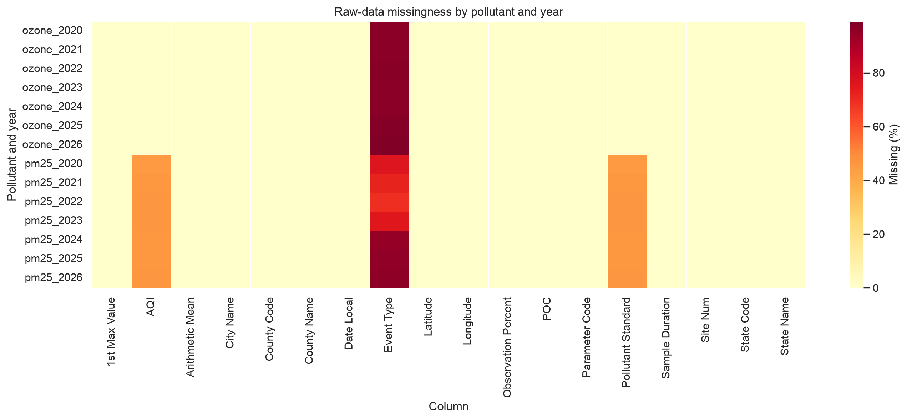
Raw-data missingness audit
The heatmap shows why completeness has to be checked by field and year instead of assuming every raw record is equally usable. Event Type is missing for most records, and AQI and Pollutant Standard are partly missing for PM2.5.
Core analysis depends on valid dates, station identifiers and concentration values, which are complete. Missing event-type fields are not treated as a meaningful signal and are not used as a model predictor.
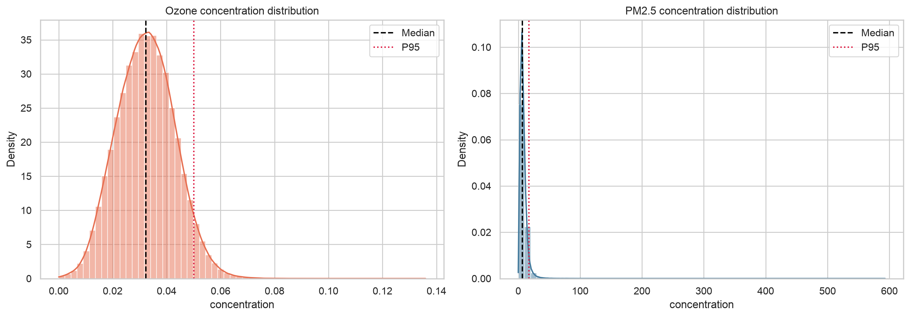
Ozone is compact, PM2.5 has a long tail
Ozone is comparatively compact and symmetric (skewness 0.127). PM2.5 is strongly right-skewed (skewness 14.40, maximum 593 µg/m³).
This supports reporting medians and interquartile ranges next to means, and trying robust scaling or transformed targets when modelling.
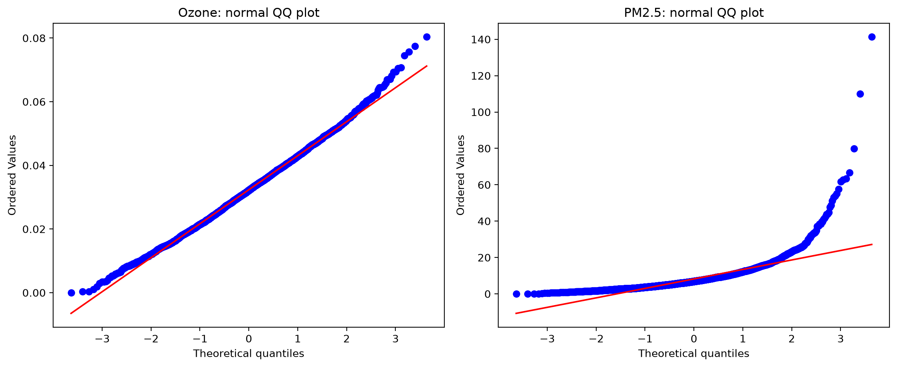
Departures from normality
Ozone follows the reference line closely apart from slight tail deviations. PM2.5 bends sharply away in the upper tail, so it is clearly non-normal.
Non-parametric seasonal tests are therefore appropriate, and extreme observations should be investigated rather than automatically deleted.
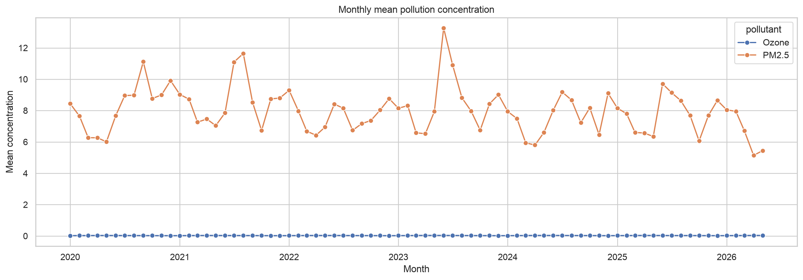
Monthly trends
Monthly mean concentrations show cyclical variation, particularly for ozone. Ozone sits near zero on this chart only because it is measured in ppm while PM2.5 is in µg/m³.
Season and calendar variables should be part of the forecasting features, and alerts should be timed to pollutant-specific seasonal patterns.
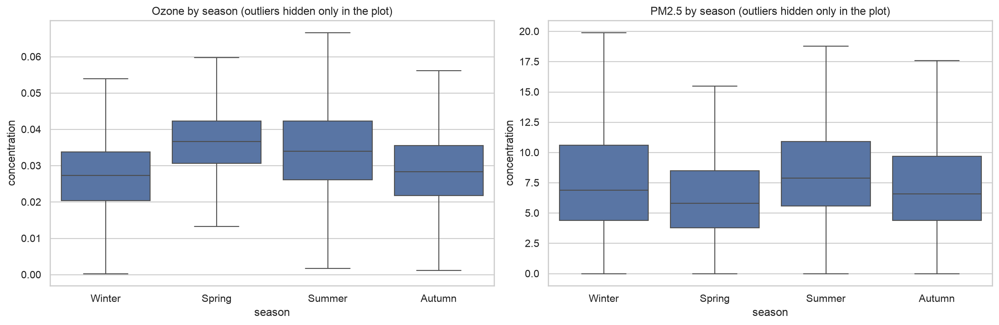
Seasonal distributions
Both pollutants differ across seasons (Kruskal–Wallis p < 0.001), with a larger seasonal effect for ozone (epsilon-squared 0.1283) than for PM2.5 (0.0380).
Ozone is highest in spring and summer. Boxplots also show spread and outliers that a mean-only comparison would hide.
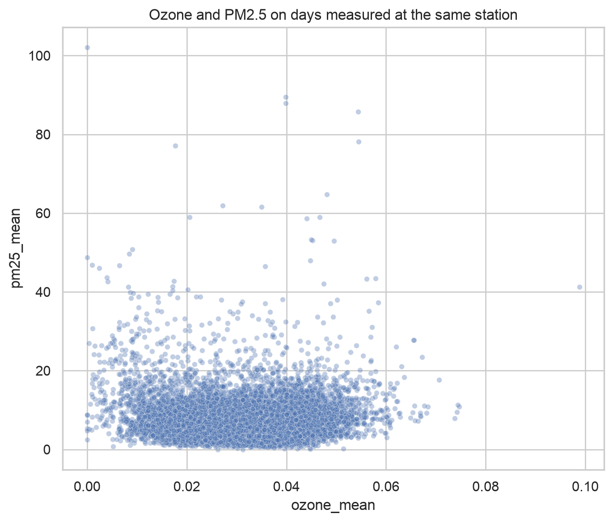
Ozone versus PM2.5 on the same day
Across 150,615 paired station-days there is almost no linear association (Pearson r = 0.00225, p = 0.383). The rank correlation is statistically significant (Spearman rho = 0.03091) but practically very weak.
One pollutant should not be used as a simple linear substitute for the other. Event-level relationships can still exist: P(PM2.5 high | ozone high) = 0.1979.
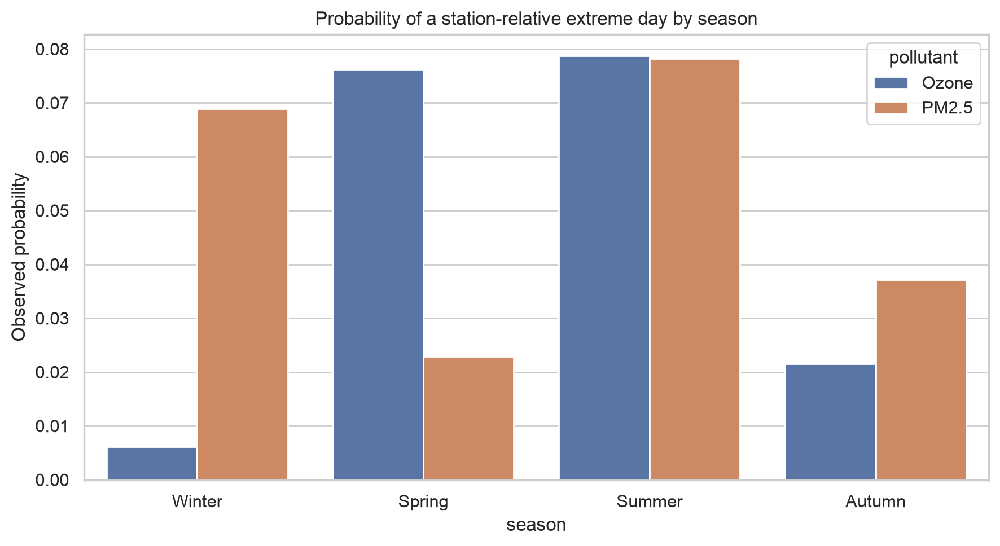
Seasonal high-day risk
High and extreme days are defined against each station's own 90th and 95th percentiles. The report gives ozone high-day risk as higher in spring (0.1576) and summer (0.1440) than winter (0.0181).
PM2.5 high-day risk is highest in summer (0.1401) and winter (0.1348). These patterns can be used to tailor seasonal alerts by pollutant.
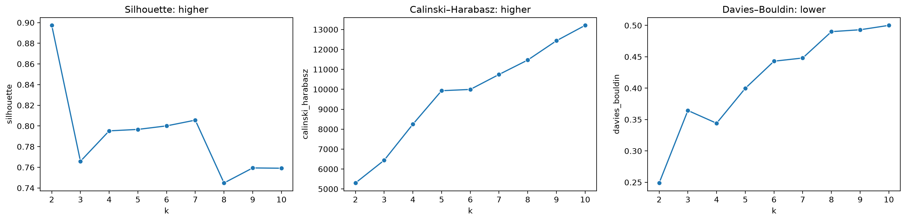
Choosing the number of clusters
The report selects k = 2, with silhouette 0.8973 and Davies–Bouldin index 0.2489. Silhouette is highest at k = 2, while Calinski–Harabasz keeps rising with k.
These internal metrics support a compact partition in this feature space, but they do not prove the clusters are optimal or stable across other samples or features.
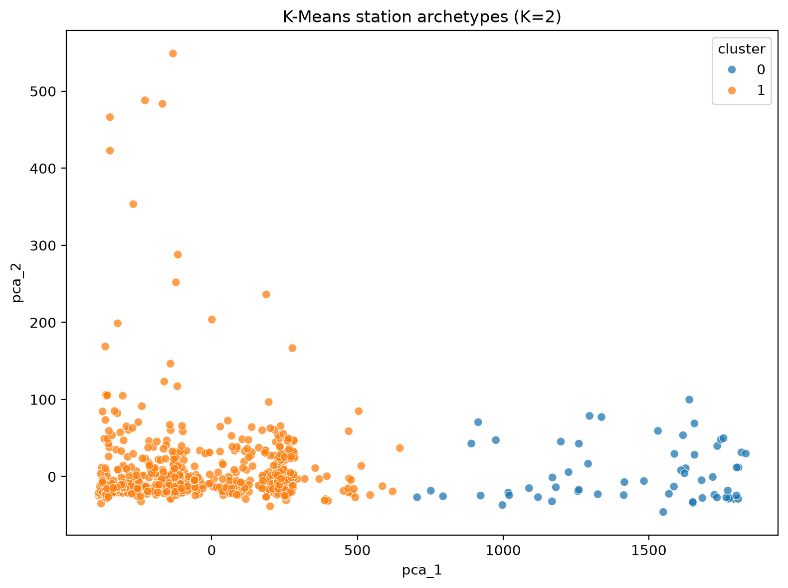
Cluster separation in PCA space
Standardized station features reduced to two principal components. Cluster 0 (60 stations) sits apart along the first component, and Cluster 1 (1,732 stations) forms the dense main group.
This is a visual diagnostic, not a geographic map or proof of causal differences. Read it together with the cluster profile table.
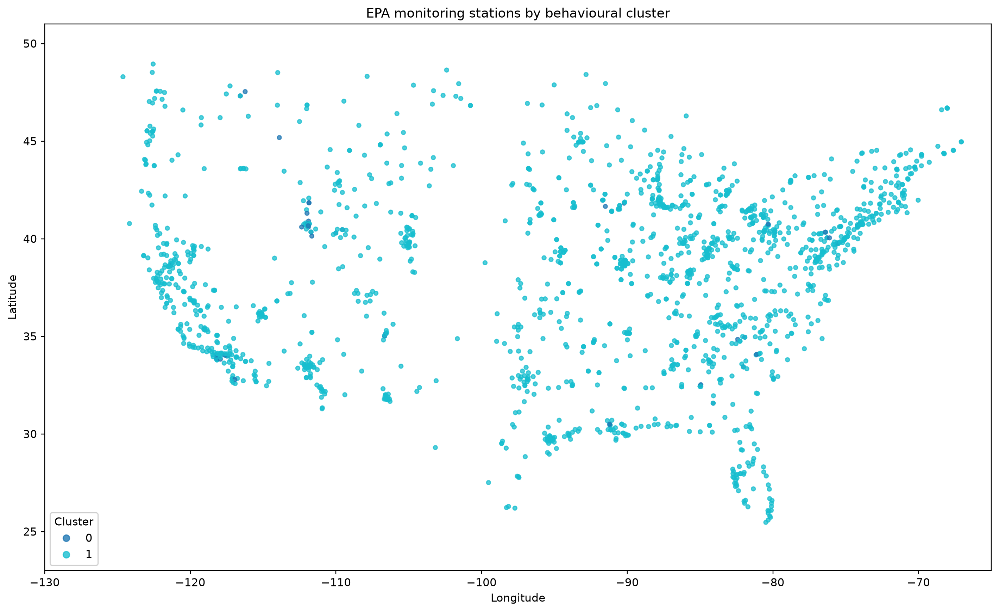
Where the clusters are located
The higher-burden group is spread across the country, so cluster membership should not be read as one single region.
Use the map to guide station-level review and monitoring prioritisation, while checking local coverage gaps.
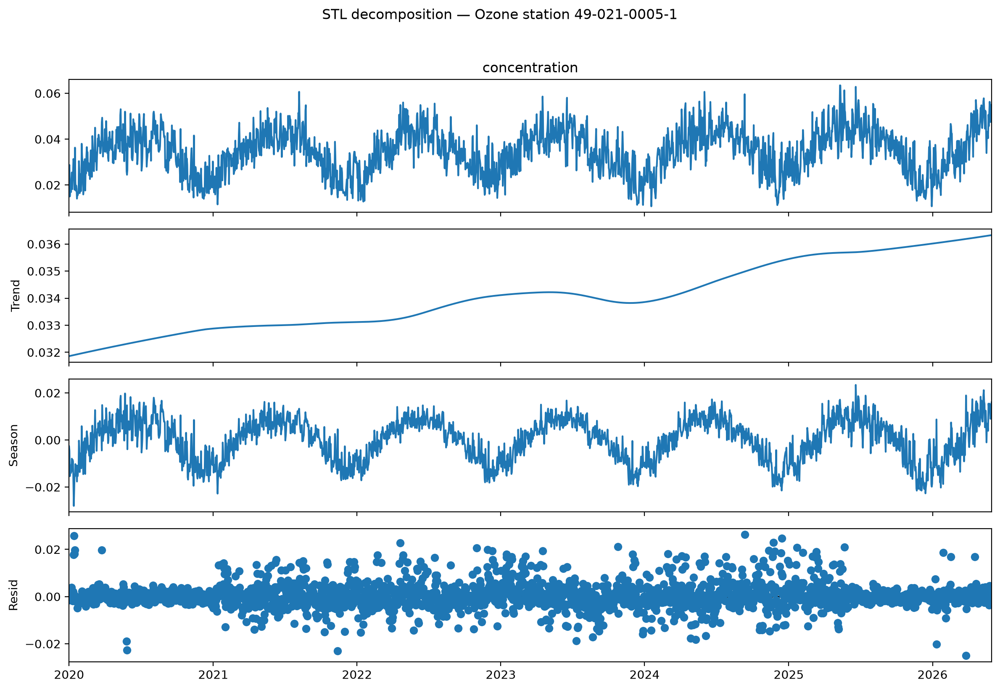
Trend, season and residual for one station
The decomposition separates a slowly rising trend, a clear yearly seasonal cycle and residual noise for one representative ozone station.
It shows why both trend and recurring seasonality matter. Because it is a single example station, it should not be generalized to every station without validation.
Statistics and extreme events
| Measure | Ozone | PM2.5 |
|---|---|---|
| Mean | 0.03236 ppm | 8.04 µg/m³ |
| Median | 0.03229 ppm | 6.80 µg/m³ |
| Standard deviation | 0.01071 ppm | 6.51 µg/m³ |
| P90 | 0.04606 ppm | 13.90 µg/m³ |
| P95 | 0.05006 ppm | 17.30 µg/m³ |
| P99 | — | 29.10 µg/m³ |
| Maximum | 0.13594 ppm | 593.0 µg/m³ |
| Skewness | 0.127 | 14.40 |
PM2.5 has far greater relative variability and a heavy upper tail. The 593 µg/m³ maximum may be a real episode or a data issue and should be source-checked, not blindly discarded.
| Event metric | Ozone | PM2.5 |
|---|---|---|
| P(high day) | 0.1008 | 0.1022 |
| P(extreme day) | 0.0506 | 0.0515 |
| P(high tomorrow | high today) | 0.4273 | 0.3197 |
| Longest high episode | 49 days | 16 days |
Marginal rates sit near 10% and 5% because thresholds are station-relative P90 and P95. The real difference is persistence: high ozone tends to stay high, so prior-day event status and recent high-day counts are useful forecasting predictors.
Year-to-year effect sizes are small (0.00737 for ozone, 0.00570 for PM2.5), so seasonality is the more important broad temporal structure. Event-level links also exist despite the near-zero linear correlation: the association rule "PM2.5 high and summer implies ozone high" has confidence 0.330 and lift 3.315.
Station clusters
| Characteristic | Cluster 0 | Cluster 1 |
|---|---|---|
| Stations | 60 | 1,732 |
| Ozone mean (ppm) | 0.03083 | 0.03250 |
| Ozone P95 (ppm) | 0.04712 | 0.04775 |
| Ozone seasonal amplitude | 0.02241 | 0.01696 |
| PM2.5 mean (µg/m³) | 8.47 | 7.98 |
| PM2.5 P95 (µg/m³) | 19.37 | 16.51 |
Cluster 0 is the small higher-burden group on PM2.5 mean/P95 and ozone seasonal amplitude, even though Cluster 1 has slightly higher ozone mean/P95. A cluster should not be labelled from one pollutant alone. The 60 stations are candidates for targeted review, not a claim that the rest are low-risk.
Forecasting readiness
Chronological splits use 2020 to 2024 for training, 2025 for validation and January to May 2026 for testing. Lag features (1, 2, 3, 7, 14, 30 days), shifted rolling statistics (3, 7, 14, 30 days) and future targets (1, 7, 14, 30 days) are built to avoid leakage.
| Pollutant | Training rows | Validation rows | Test rows |
|---|---|---|---|
| Ozone | 1,583,754 | 323,539 | 64,250 |
| PM2.5 | 169,124 | 34,462 | 7,390 |
This is a preparation design, not evidence of forecasting accuracy. No MAE, RMSE or R² results are reported yet.
Anomalies, observations and patterns
- Anomaly: PM2.5 has an extreme maximum of 593 µg/m³ and skewness of 14.40. It needs source-checking rather than automatic removal.
- Anomaly: Ozone and PM2.5 are almost uncorrelated day to day (r = 0.00225), yet high-PM2.5 summer days strongly co-occur with high-ozone days (lift 3.315).
- Observation: The two clusters are very unbalanced (60 versus 1,732 stations), and the 60 higher-burden stations are spread across the country rather than in one region.
- Observation: PM2.5-derived rolling features are highly missing (62.22% for one mean feature), so results should be reported with coverage and per-station performance.
- Pattern: Ozone peaks in spring and summer with a strong yearly cycle; PM2.5 risk peaks in summer and winter.
- Pattern: High ozone days persist longer than high PM2.5 days (49 versus 16 days at most).
Limitations and next steps
- No completed forecasting benchmark yet. Next, compare persistence and simple statistical baselines with regularized regression and tree-based models, using walk-forward evaluation by pollutant, horizon and cluster.
- Cluster stability should be checked across resampling, feature sets and time windows before membership is treated as fixed.
- The station-day panel is sparse across pollutants and time, so pooled metrics alone would be misleading.